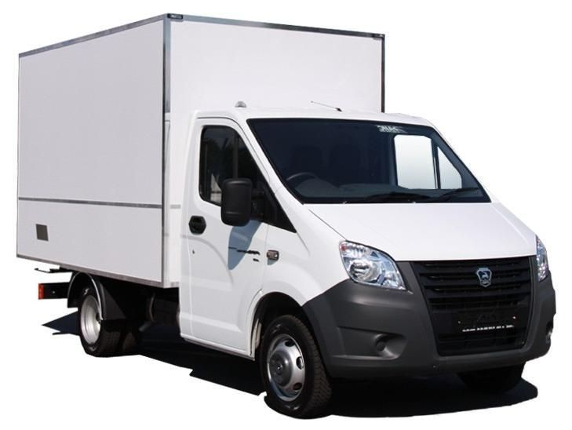

<!DOCTYPE html>
<html>
  <head>
    <title></title>
  </head>
  <body></body>
</html>
<!DOCTYPE html>
<html lang="ru">
<head>
<meta charset="utf-8" />
<title>Код блочного сайта</title>


<style>
body{
  background:#c0c0c0; /* Меняется фон экрана, выбирается здесь */
}

#wrapper{ /* Оболочка страницы сайта */
  width: 900px; /* Меняется ширина страницы */
  margin: 0 auto;
  background:#f2e8c9; /* Меняется задний фон страницы */
}

/* Шапка сайта */

#header{
position:relative; /* Задаём блоку относительное позиционирование для того, чтобы затем размещать, в нём другие элементы и позиционировать относительно его границ поверх фоновой картинки и заголовка */
  height: 250px; /* Высота шапки */
  background-color: #ffffff; /* Фон шапки */
   margin-bottom: 5px; /* Нижний отступ шапки от остального контента */
  border-radius: 5px; /* Закругляются углы блока */
  box-shadow: rgba(0,0,0,0.5) 0px 1px 3px; /* Тень. Визуально приподнимает блок над оболочкой */
}
img{ /* Фоновая картинка в шапке */
float: left; /* Разрешаем наплывание других элементов на картинку */
  margin: 0px 0 0 0;
  width: fit-content;
  
} /* Размещаем картинку в блоке header. 1-я и 3-я цифры - двигаем вверх-вниз, 2-я и 4-я цифры - двигаем вправо-влево */
h1{ /* Заголовок сайта */
  margin:0 0 10px 40px; /* Заголовок двигается верх-вправо-вниз-влево. */
  color:#464451; /* Цвет заголовка */
}
.nomer{ /*Подзаголовок (номер телефона)*/
  position:absolute; /* Позиционируем абсолютно подзаголовок, относительно границ блока header. Также можно разместить в шапке сайта ещё другие картинки и абзацы поверх фоновой картинки и заголовка */
  top:5px; /* Двигается вверх-вниз */
  left:680px; /* Двигается вправо-влево */
  font-size: 25px; /* Размер букв подзаголовка */
  font-style:italic; /* Курсив */
  font-weight:bold; /* Жирный */
  color:#464451; /* Цвет букв подзаголовка */
}

/* Сайдбар (колонка справа) */

#sidebar{ /* Блок сайдбара */
  background-color: #ffffff; /* Фон блока */
  width: 180px; /* Ширина блока */
  padding: 10px; /* Отступ текста от краёв */
  float: right; /* Размещаем блок справа от других элементов, наплывание или обтекание справа). Если делать сайдбар слева, то значение right меняем на left */
  border-radius: 5px; /* Закругляем углы блока */
  box-shadow: rgba(0,0,0,0.5) 0px 1px 3px; /* Задаём блоку тень */
}
.marcer{ /* Галочки маркеры меню */
  float: left; /* Размещаем слева от текста */
  margin: 5px 5px 0 0; /* Двигаются вверх-вправо-вниз-влево */
}

/* Контент (статья) */

#content{ /* Блок контента */
  margin-bottom: 5px; /* Отступ блока статьи от блока подвала */
  width: 676px; /* Ширина статьи */
  padding: 10px; /* Отступ текста от краёв блока */
  background: #ffffff; /* Фон статьи */
  border-radius: 5px;
  box-shadow: rgba(0,0,0,0.5) 0px 1px 3px;
}
.left{ /* Картинка в тексте слева */
  float: left;
  margin: 30px 7px 7px 7px;
}
.right{ /* Картинка в тексте справа */
  float: right;
  width: 120px;
}
/* Подвал */

#footer{ /* Блок подвала */
  height:80px; /* Высота блока подвала */
  background-color: #ffffff; /* Фон блока подвала */
  margin-bottom: 10px; /* Отступ снизу */
  border-radius: 5px; /* Закруглённые углы */
  box-shadow: rgba(0,0,0,0.5) 0px 1px 3px; /* Тень блока */
}
.clear{ /* Запрет наплывания. Устанавливается для того, чтобы блок контента, при заполнении текстом и изображениями не наплывал на подвал */
  clear: both;
}
  .fon{ /* Номер телефона */
  float:left; /* Разрешаем другим элементам обтекать абзац справа */
  margin:20px 0 0 20px;
}
.fax{ /* Номер факса */
  float:left;
  margin:20px 0 0 60px;
}
.mail{ /* Адрес E-mail */
  float:left;
 margin:20px 0 0 60px;
}
.img{
  width: 700px;
}
.img2{
  width: 250px;
}
</style>
</head>
<body>
  <div id="wrapper"> <!--Оболочка страницы-->
<!--Шапка сайта-->
    <div id="header">
<!--Заголовок сайта-->
      <h1>Грузоперевозки</h1>
<!--Описание (телефон)-->
        <p class="nomer">234-49-50 <br> +7 900 650 33 45</p>
<!--Фоновая картинка в шапке сайта-->
      <div class="img"></div>
    </div>
<!--Сайдбар-->
    <div id="sidebar">
<!--меню-->
      <h3>На нашем сайте</h3>
<!--Картинки маркеров меню (галочки)-->
        <p>Наши сотрудники</p>
        <p>Наша техника</p>
        <p>Прайс</p>
<!--Прямая синяя линия-->
          <hr width="50" color="#037FFC" size="5">
<!--Общая информация в сайдбаре-->
      <h3>Другая информация</h3>
    </div>
<!--Основной контент (статья)-->
    <div id="content">
<!--Картинка слева-->
<!--Заголовок статьи-->
        <h3>Наша работа</h3>
<!--Текст статьи-->
<p>Здравствуйте уважаемые!</p>
<p>Я рад приветствовать Вас на своём сайте.</p>
<p>Если вы человек который имеет грузоперевозочную машину и вас устраивает такая работа
  то пишите нам и звоните узнавайте по поводу  нашей работы.
Часы работы с 10:00 до 20:00
Зарплата в неделю 15000 рублей
В месяц 70000 рублей груз </p>
<!--Картинка справа-->
      

<p>Здесь читайте и звоните нам по поводу работы, каким
бы ни был Ваш возраст и стаж работы.</p>
<p>Уверен, у Вас получится у нас устроиться.</p>
    </div>
<!--Запрет наплывания-->
  <div class="clear"></div>
<!--Подвал-->
    <div id="footer">
      <p class="fon"><strong>Телефон:<br> 265-48-76</strong> </p>
      <p class="fax"><strong>Факс:<br> 265-85-97</strong></p>
      <p class="mail"><strong>E-mail<br>ctoooto@mail.ru</strong></p>

    </div>
  </div>
</body>
</html>